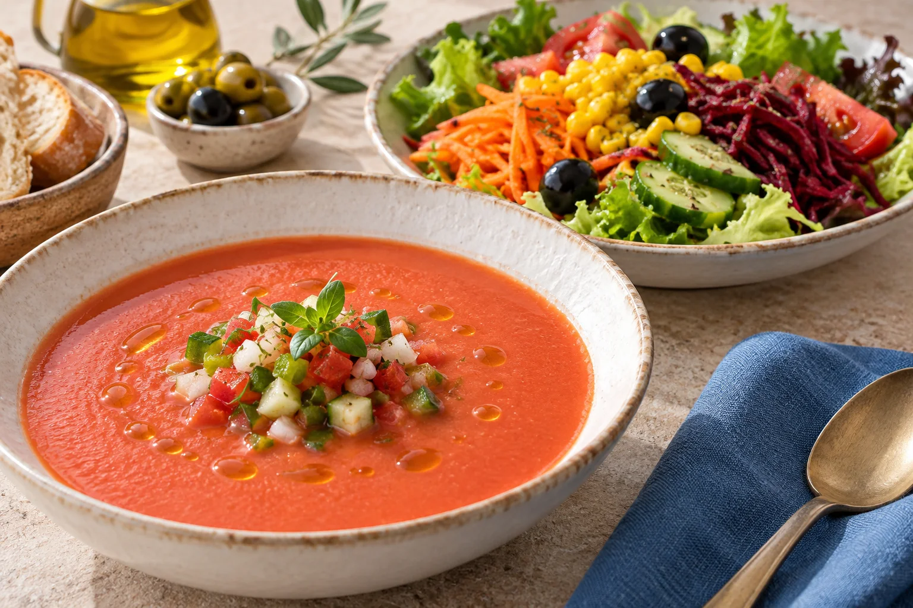
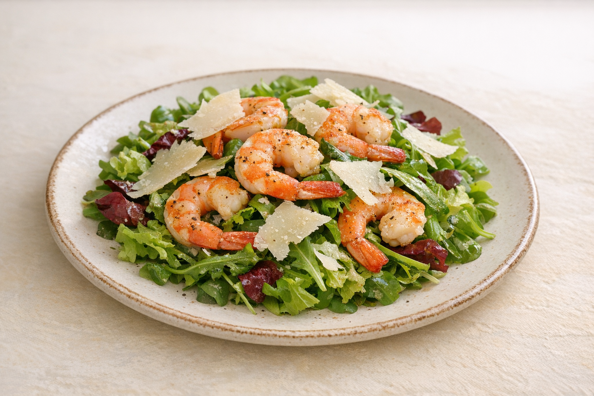

01
Sopas y entrantes
Gazpachuelo (por encargo), p.p.
13.00 €Gazpacho (temporada)
6.50 €Ajoblanco (temporada)
7.50 €Mojama de atún
15.00 €Jamón de bellota
22.00 €Queso curado
17.00 €Porra antequerana
10.00 €Berenjenas con miel de caña
10.00 €Tartar de atún 200 gr
23.00 €Carpaccio de pulpo con vinagreta de fruta de la pasión
18.00 €Tataki de atún con alga wakame
22.00 €Boquerones en vinagre
14.00 €Matrimonio p.u. (anchoa y boquerón sobre tosta con tomate)
4.00 €Espárrago triguero con lágrimas de parmesano
13.00 €Tartar mediterráneo (pez limón, gamba roja, tomate de temporada y vinagreta de albahaca)
24.00 €
02
Ensaladas
Mixta (lechuga, tomate, cebolla, maíz, remolacha, aceitunas, pepino y zanahoria)
8.00 €Especial (lechuga, tomate, cebolla, maíz, remolacha, pepino, huevo duro, atún y zanahoria)
9.00 €De la casa (lechuga, tomate, cebolla, maíz, remolacha, pepino, huevo duro, zanahoria, atún, piña, manzana, aguacate y salsa rosa)
11.00 €Brotes tiernos y crujiente de pollo con miel y mostaza
13.00 €Ensalada de langostinos y parmesano
13.00 €Ensaladilla rusa
9.00 €Ensalada de pimientos asados en horno de carbón
10.00 €Ensalada de pimientos con ventresca
13.00 €Tomate de campo con aguacate y ventresca
13.00 €Tomate de campo (según temporada)
9.00 €Salmón con endivias y roquefort
12.00 €